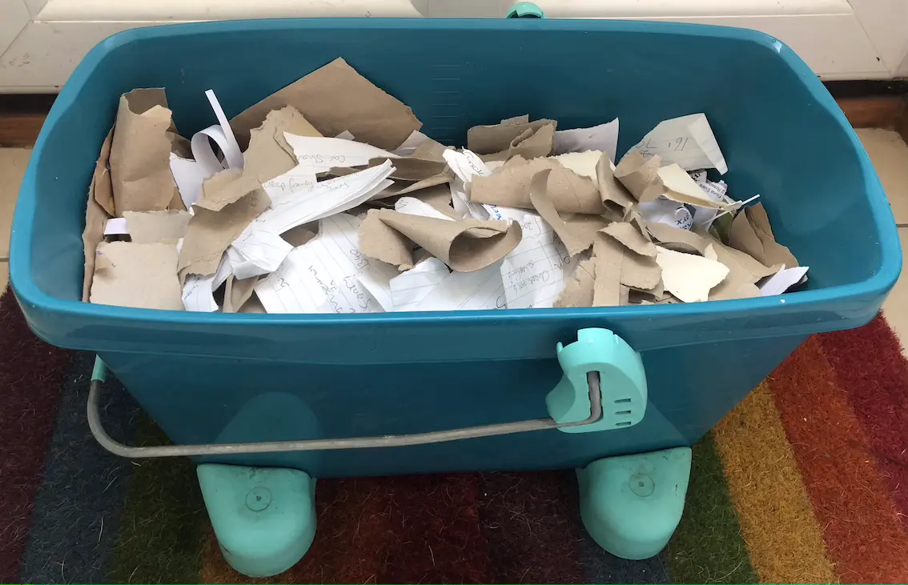
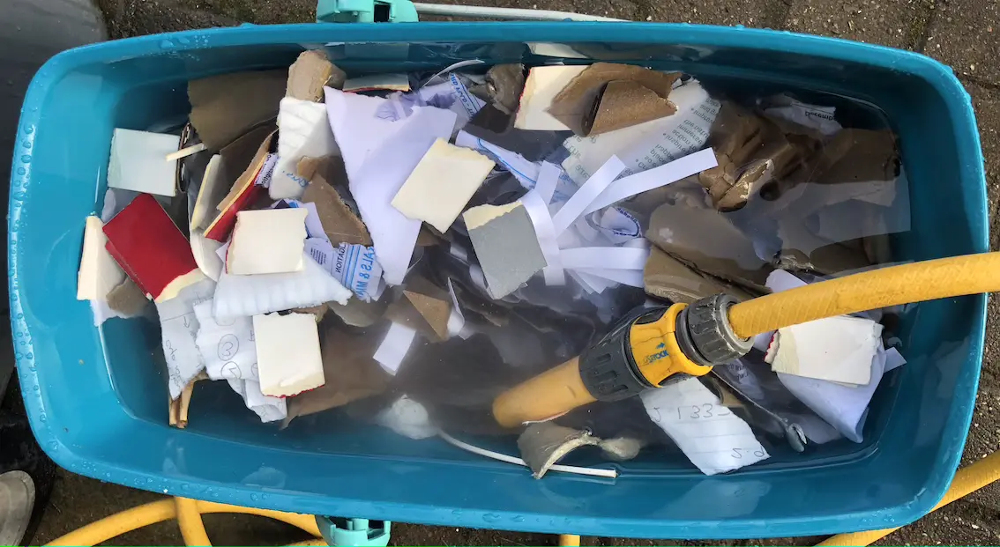
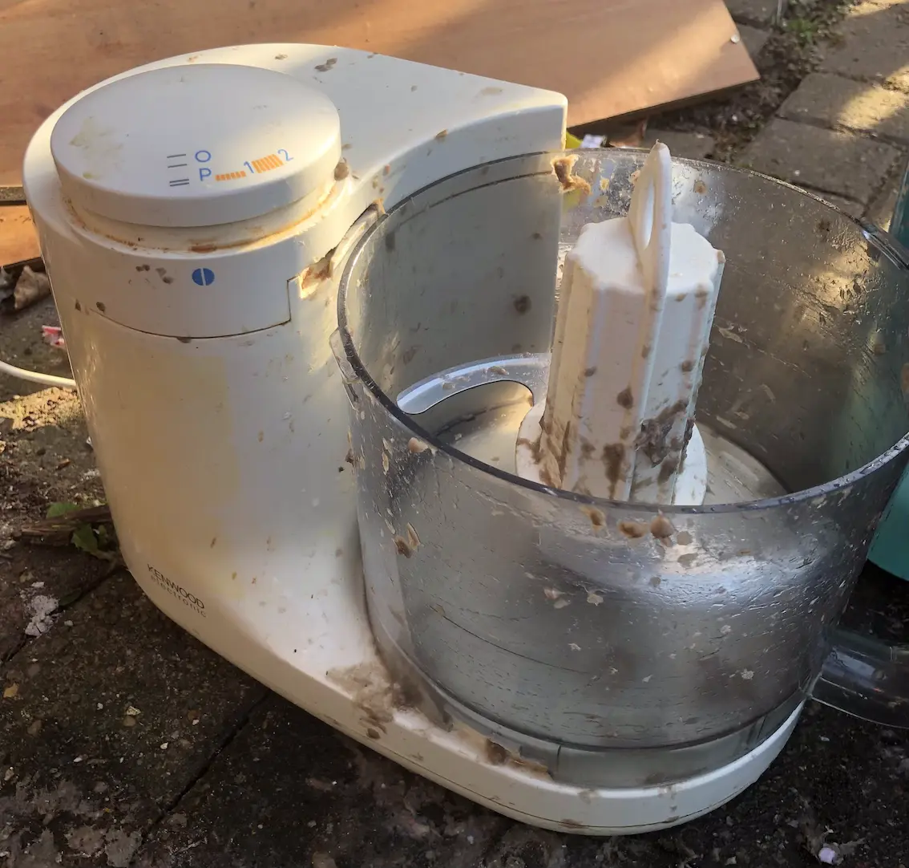
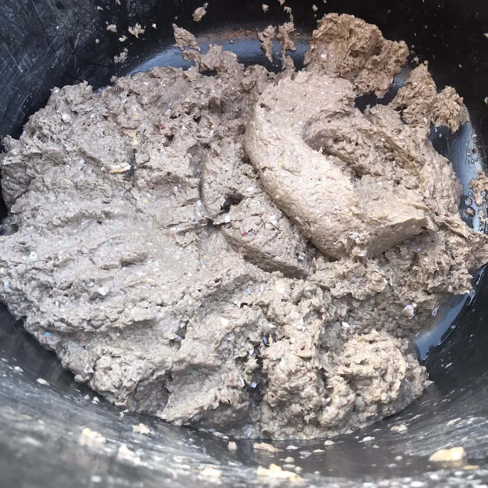
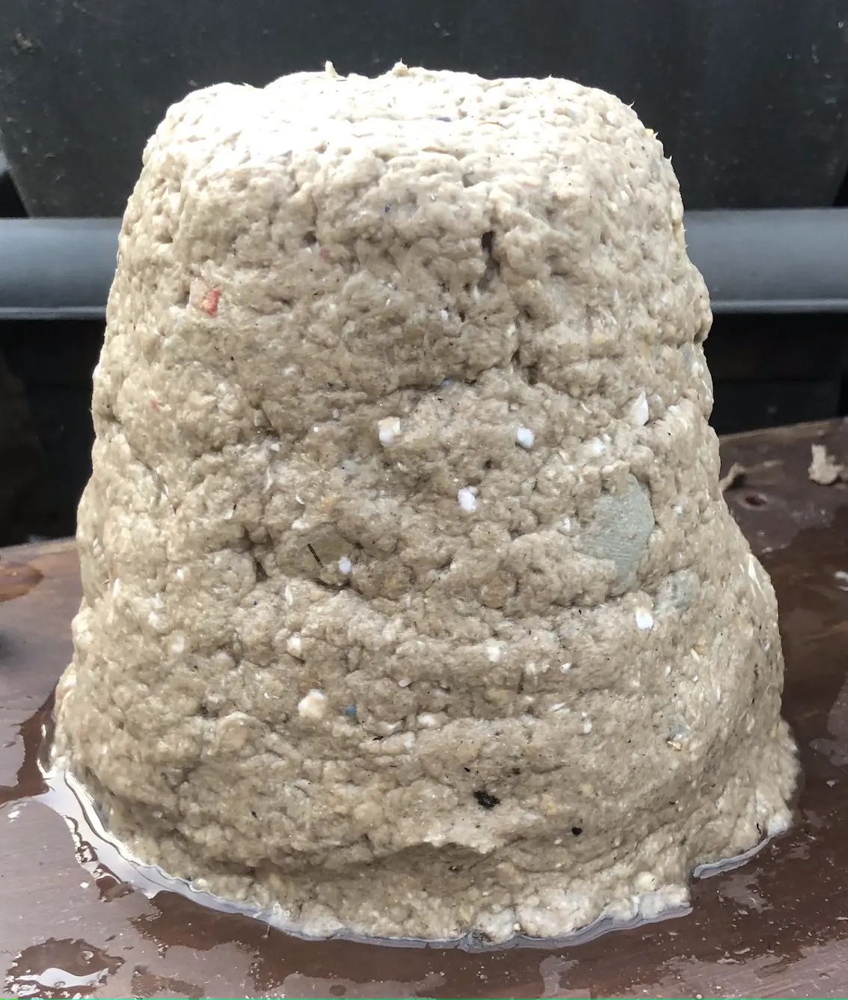
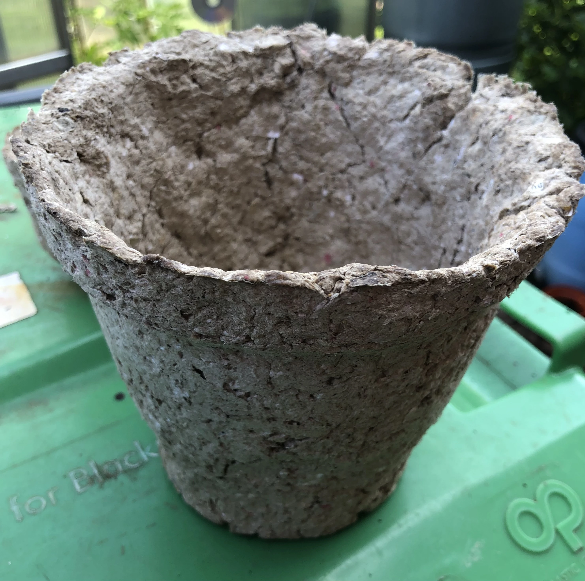

Plastic-free Plant Pots
Where possible, I try to avoid buying plastic plant pots. I re-use the pots that come along with any plants that I buy. I even press old ice cream tubs, yogurt pots or other plastic packaging into service. However, sometimes there are more plants than containers.
The Ikea 'Get Growing' Workshop gave us practice in making pots from newspaper and fellow Lagommers have posted pictures on the Live Lagom Facebook page that show such pots can be effective. However, my origami isn't really up to the task and I wanted something a bit more durable.
So what to do?
Other Live Lagom Facebook posts had given instructions on making papier-mâché for craft purposes or to fashion handmade paper. I'd wanted to have a go, but there have always been so many other activities competing for my time. I wondered whether I could combine an attempt to make papier-mâché with finding a solution to my planting issues.
There was only one way to find out...
I raided the recycling bag, selecting a mixture of paper and cardboard, and tore it to pieces. An old mop bucket was brought out of retirement to contain all the debris.
It's been years since I've done anything like this, so a quick search online suggested I needed hot water...but only after I'd filled the bucket with cold... I told myself I'd done that deliberately to start the soaking process...
Then I waited.
After a few days, the cardboard and paper seemed sufficiently soggy.
It was time for another household item to come out of retirement. My old mixer had been left to one side when a replacement had been acquired. But it seemed wasteful to dispose of it while it still worked. And it had been useful in processing meals for the dogs.
Anyway, it did a great job of reducing the soggy cardboard to mush and, no, I haven't just washed it and returned it to the kitchen! I now have a new tool in my crafting and DIY arsenal.
So I had a big pot of papier-mâché and a dilemma. How could I mould pots from it.
My first attempt looked OK. I just pressed the papier-mâché onto the outside of containers, expecting to let the papier-mâché dry and then release the moulds.
Nice idea, but really I should have thought about greasing the moulds. They were never going to come out.
So I've got two approaches now drying. I've still got papier-mâché applied to the outside of greased containers. And I've also tried applying the papier-mâché onto the inside of containers. That won't leave quite as much space for compost, but, as I'm expecting the papier-mâché to contract as it dries, I do hope that the moulds will be easier to free.
This is probably a task for the summer months, when the heat and sunshine will aid the drying process. Well, I can hope for that sort of weather in an English summer. At the moment, I'm expecting the stiff breeze off the Irish Sea to work its magic.
The papier-mâché was very wet so an update on how the experiment worked out may take a little while.
Update
A few pots have been created from the experiment.
But there'd have to be a real change in approach if I was to do something similar again.
They took ages to dry then it was a bit too hard to remove the pots from their moulds. My compost bin benefitted by receiving a number of breakages. And I'm not convinced that the pots will last very long when the plants within them are being watered regularly.
So it's back to the drawing board.